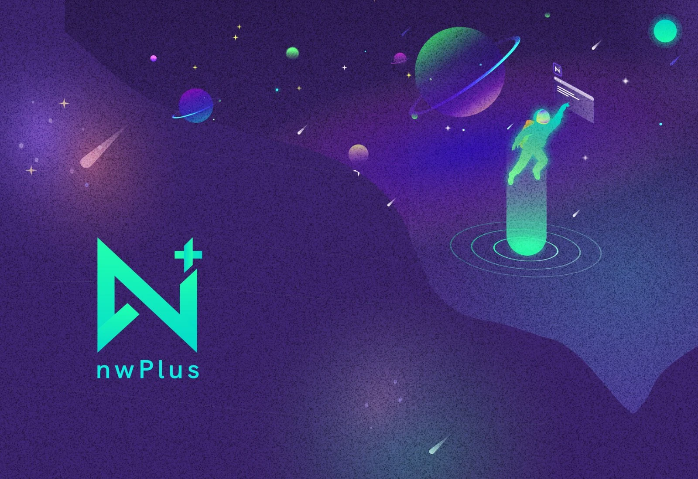

nwPlus
Driving design for Western Canada's largest hackathons — [one line on what you design: brand, hacker-facing products, event tooling].
What I owned
- I [owned area one — e.g. led design for HackCamp's hacker-facing experience].
- I [owned area two — e.g. built and maintained shared components across events].
- I [owned area three — e.g. shipped X features with the dev team].
Impact
[x,xxx][hackers reached across events]
[x][events shipped per year]
[xx][components in the shared system]
[xx%][a metric you moved]
[One line that frames nwPlus and your seat at the table.]
[2–3 sentences: what nwPlus is, the events it runs, and where design fits in the org.]
[The core design problem in one sharp sentence.]
- [Pain point one.]
- [Pain point two.]
- [Pain point three.]
Process
[Short note on how you worked — then let the snapshots show the iterations.]
[The decision that mattered most]
[2–3 sentences on the tradeoff and why you landed where you did.]
What shipped
[One short paragraph — the visuals do the talking.]
Outcomes
[x,xxx][metric — e.g. applicants]
[xx%][metric — e.g. completion rate]
[xx][metric — e.g. NPS or feedback score]
[A line of feedback from a hacker, organizer, or teammate.]
[Name, role]
Reflection
[2–3 honest sentences: what you'd do differently, and what designing at event scale taught you.]